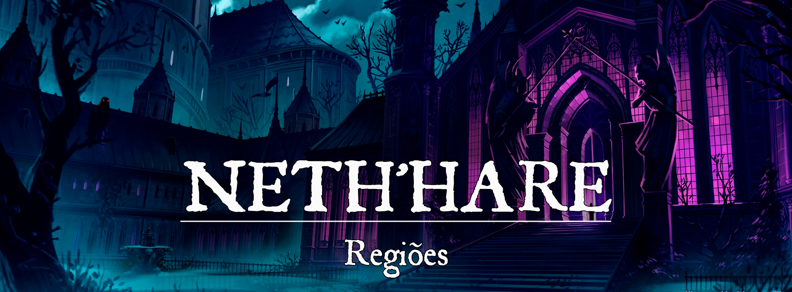

Neth’hare
Descrição
Distante das terras verdes e prósperas, onde apenas vileza e corrupção escolheu abraçar a terra, uma civilização se ergueu estruturada em códigos morais questionáveis e uma cultura onde apenas a magia tem o direito de governar, e todos que falham em tê-la estão abaixo.
A tangência com os planos inferiores afetou não apenas a terra, mas também o povo, sendo dito que nos primórdios o povo élfico cedeu a forças sombrias para obter o poder de habitar essas terras, estes denominados Despertos. Os elfos ergueram uma sociedade cruel onde a escravidão se tornou comum, tal como o livre uso de seus escravos, não havendo possíveis leis que protegessem os mesmos de serem manuseados como seus senhores bem entendessem. Com a queda do poder élfico e enfraquecimento da magia, Neth’hare passou por uma mudança de governo, sendo tomada pelos antigos escravos, mas no lugar de retornar um local de liberdade e contra a escravidão, estes mantiveram toda a cultura arcana e maligna fundada pelos Despertos.
Assim, no extremo sul de Pheros, cresce a tirania magocrata de Neth’hare, tendo o Conselho de Mantos Violeta como principais líderes das terras tomadas pela presença corruptora e vil, com um povo dividido em escravos, cuja lealdade é mantida por magias cruéis, e por mestres de rituais profanos e das magias que o restante do mundo considera amorais.
Geografia:
Nethhare.jpg |Geografia
{kind=link}
A magocracia de Neth’hare cresce em um ambiente desolado, onde a vida é deturpada por um tangenciamento planar não com um, mas com todos os planos inferiores. Ao longo do território, onde altos picos e profundas ravinas rasgam a terra, onde vida floral cresce estranha e tomada por uma energia bizarra, mesma energia que percorre veios da terra, se assemelhando a rios da mais pura energia púrpura, assim regando toda a terra com essa presença arcana conturbada que alimenta o florescer do Sangue Violeta. Não fosse suficiente, a região de Neth’hare é fragmentada em diversas ilhas e parte de terra completamente rasgada num desenho fractal, quase como um mosaico, tendo como única parte apropriadamente bem formada o centro do reino, onde a Cidadela Púrpura, capital da magocracia, ergue-se imponente.
As cicatrizes arcanas que regam a terra são chamadas de Sangue de Neth’hare, sendo a responsáveis por regar as profundezas que permitem os cristais púrpuras afloram na superfície, tal como que alimentam os eixos planares, fazendo da flora algo sobrenatural, e da fauna uma tormenta de pura mácula. Os pontos pluviais da magocracia, com rios, bacias e costas, são conhecidas por Águas dos Desafortunados, por ressoar como um eco do styx, podendo ver no reflexo das águas espíritos em pânico navegando perdidos, mas que às vezes conseguem encontrar brechas para escapar para o material, ou afogar viajantes para o styx de verdade.
O clima é peculiar, partindo do esperado da região sul de dias absurdamente quentes e noites congelantes, mas há mudanças súbitas no clima neth’ari que foge ao controle mortal, sendo causadas pelos eixos quando os mesmos recebem uma descarga de poder maior que o normal, efeito decorrente do acúmulo de poderosas conjurações no território, e com isso um dia caloroso pode se tornar uma friaca com tempestades de neves, nevoeiros podem se erguer, algumas vezes venenosos, um calor incendiário pode tomar as terras, iniciando focos de fogo em segundos. Dessa forma, habitar Neth’hare fora das muralhas protegidas por magia carrega um grande risco.
Tal como é o clima, o território de Neth’hare, como um todo, conta com sua fauna e flora, tal como até mesmo o povo, divergente em diferentes locais, sendo controlados pelo eixo que se potencializa no ponto. Tendo assim, na região da Cidadela de Sangue, onde grãos mestres da necromância fazem suas pesquisas com o apoio do eixo de Hades, a terra é seca e tomada por areias cinzentas e a presença de aparições fantasmagóricas são comuns, enquanto na região da Cidadela dos Contratos, onde a seres infernais habitam e completam o povo que especializa-se nas artes políticas e nefastas com auxílio do eixo ordeiro de Baator, a terra não sofreu grande alteração, mas a flora e fauna são ecos dos infernos, contanto com a presença de diabos que conseguem às vezes trafegar para o material pelas redondezas.
Governo:
Neth’hare tem seu governo fundado numa tirania magocrata, assim sendo governada pelo arquimagos mais poderosos, estes nomeados como membros do Conselho de Mantos Violetas, mas dando direito à fala de outros arcanistas, recebendo suas opiniões, apesar de muitas vezes ignorá-las e, dependendo do que fosse proposto, punindo aquele que ergue a voz. Sua base política conta com esses altos mestres da magia como superiores e tudo e todos, tendo suas palavras como lei, enquanto os restantes dos conjuradores que habitam Neth’hare são parte da autarquia e nobreza neth’ari, que preenchem os cargos de manutenção local, como por exemplo a força de elite neth’ari, os Cetros de Ametista. O povo comum vivendo à sombra dessa tirania sem poder muito questionar, ou acabarão lançados à escravidão, buscando pagar os devidos impostos ao governo e manter seus negócios abertos. Abaixo de tudo e todos estão os escravos, com nenhuma lei própria para dar segurança social a eles, mas com o conselho comandando que o distrito onde eles habitam tenham alguns bens de qualidade de vida, como acesso a água e comida, tal como segurança perante o exterior, mas como são manuseados além disso depende apenas da estrutura que a cidadela quiser aplicar, claro, sempre sendo necessário aval político do conselho, sendo uma terra de burocracia enorme para qualquer um que nãos os tirânicos membros do Conselho de Mantos Violetas.
Caráter:
Os neth’ari são um povo culto, contudo com raízes de maldade, sejam essas representadas em crueldade, soberba e avareza. A magocracia não tem suas portas fechadas a viajantes, mas são raros os que escolhem ir até ela, principalmente ciente de suas leis e políticas, onde um passo em falso pode lançar qualquer à eterna escravidão ou, no mímino, violentas punições públicas. Aos neth’ari a única língua que se fala com os povos exteriores é a da moeda, buscando acordos e, por isso, não sendo um povo de preconceitos à primeira vista, na verdade, não há preconceito no geral entre os neth’ari, tratando todo e qualquer um que não seja parte da magocracia com o mesmo olhar de cima e frieza de meramente negócios. Apesar dessa ser a regra, existem diversas exceções, principalmente entre o povo comum que, apesar de prestar semelhantes costumes, tendem a ser um pouco mais agradáveis e ter interesse em viajantes para o progresso de seus negócios, mas sempre com receio de, ao estar criando boas relações com estrangeiros, acabarem rechaçados. O mesmo se vale aos escravos, que dentro de seu distrito tem uma vida própria, mas quando alocados para funções costumam seguir as ordens para evitar piores consequências, não sendo, contudo, incomuns às tentativas de rebeliões.
População:
A população neth’hare é bastante dividida, contudo a maioria opressora está nos humanos e seus derivados, normalmente ligados à mestiçagem élfica e os tocados por linhagens, como é o caso do tieflings e dhampiros. A verdade é que, dentro de Neth’hare, pode-se encontrar uma grande variação racial, pois não é isso que controla o domínio da cidade, fazendo com que membros de mesma raça estejam em posto de Magos Violetas e Escravos em simultâneo. A gama racial, contudo, tem maiores focos nas cidadelas construídas sob os eixos planares, como na Cidadela de Sangue, onde a presença de Hades fez com que os neth’ari de lá fossem tocados por uma essência morta-viva poderosa, ou na Cidadela dos Contratos, onde o domínio de Baator fez gerações de tieflings crescerem dentro das muralhas. Por fim, a grande certeza é que as raças que em muitos lugares são tratadas como monstruosas e cruéis encontram em Neth’hare algum espaço para serem civilizadas.
Cultura
Em Neth’hare o culto ao proíbido é o que perdura todos os conselhos e gerações, expressando isso nas enormes bibliotecas, oficinas de estudos arcanos, e até mesmo na grande escola arcana, a Húbris dos Despertos. Contudo, esse povo cruel também carrega consigo não só a magia, mas a paixão por grandes espetáculos, estes sendo obras artísticas feitas por meios mágicos, ou utilizando de escravos para serem seus atores, o que é um melhor desfecho do que a maioria, pois os escravos são tidos como peças de diversão neth’ari, sejam humanoides ou não, lançando-os em arenas e outros tipos de jogos desumanos que os tratam apenas como peças. O que se pode esperar das obras neth’ari é o encontro de objetos e conhecimentos profanos e esquecidos, tal como cruéis espetáculos com os escravos sendo as grandes atrações.
Em termos de fé, a religião percorre a magocracia, tendo templos em nomes de diversas divindades, todas em sua grande gama, neutras ou malignas. Cada cidade tende a ter seus fés principais, como a Cidadela dos Contratos, que conta com uma igreja aberta a Asmodan. Entretanto, no território de Neth’hare, mais comum que templos divinos, são grandes cultos a Poderes planares, como arquidiabos ou a própria Rainha Dragão, por exemplo.
Locais Relevantes:
Nethhare_-_Capital_Purpura.png |Cidadela Púrpura
{kind=link}
Cidadela Púrpura: A capital da magocracia, a cidadela púrpura conta a história e conhecimento dos milênios. A cidadela divide-se em três níveis, tendo a parte que toca o solo protegida por densas muralhas, golens e outros seres arcanamento presos por magia que servem de guardiões, não só contra perigosos externos,como internos, não permitindo que os que habitam a parte em solo da cidadela deixem-na nunca, pois este é o distrito dos escravos. Já no grande pedaço de terra flutuante cresce de maneira imponente e bela a grande cidadela de tons roxos. Nela o povo comum, cidadãos neth’ari partilham ruas e casas com a autarquia arcana, havendo uma divisão por muros finos, mas protegido por poderosas magias. É na parte mais alta em que a nobreza faz seus jogos políticos, cresce em seus desejos e pecados, tal como onde a Regência Púrpura, o grande palácio de neth’hare mantém-se firme, servindo de sede para reuniões políticas, principalmente para os Grãos Arcanos dos Mantos Violetas e seus arcanistas de elite do Cetro de Ametista. A cidadela conta com um mercado absurdo, sendo uma mescla de todas as cidades, mas com o desenvolvimento de escravos e das grandes bibliotecas e tutelagem arcanas como principal foco. Seus conflitos são os males que percorrem toda a região da magocracia, contando com um extra dos mais intensos conflitos políticos e internos de um povo mesquinho e ganancioso cuja moralidade deixou de existir há séculos.
Cidadela dos Contratos: A cidadela dos contratos fica a noroeste da capital, e foi reconstruída onde antes a fortaleza infernal se ergueu nos Anos de Desespero. A cidade é influenciada pela tangência planar com os Nove Infernos de Baator, tendo as terras áridas e secas naturais ao território neth’ari, mas sofrendo diversas mudanças climáticas com base nas camadas de Baator, podendo ir de uma congelante friaca até uma umidade com o ar se tornando venenoso. A cidadela conta com mecanismos de proteção arcana, fazendo-a ter como uma espécie de cúpula arcana ao seu redor, invisível a olhos nus, que protege o povo das variações externas. A influência infernal fez com que gerações do povo neth’ari nascessem tocadas pela essência de Asmodan, assim se tornando tieflings, que com o tempo passaram a ter características mais únicas conforme a influência de outros diabos se tornou mais forte sob os mortais. A cidade foca em criar exímios políticos, comerciantes, diplomatas e escrivães. Os Magos Violetas que crescem na Cidadela dos Contratos tem o costume de abraçar diabos como criaturas compactuadas, sendo quase incomum um Mago Violeta da cidadela que não tenha um contrato infernal. A cidade fica num ponto muito bom para investir em embarcações e comércio pelo Mar dos Destemidos, mas também sofre muito pelos eixos do Pandemônio e Abismo cujas ruínas são próximas, assim sendo constantemente atacados por forças demoníacas e pelo caos que o eixo de pandemônio causa à terra.
Cidadela do Sangue: A cidadela do sangue fica a sudoeste da capital, e foi reconstruída onde antes a fortaleza oriunda de Hades surgiu nos Anos de Desespero. A cidade é, portanto, influenciada pela Perdição Cinzenta de Hades, tendo as terras tomadas pela secura completamente cinza e com árvores mortas, ressecadas, ao redor, com uma infeliz frequência ocorrendo chuvas ou neve, não pesada, e feitas de cinzas. Nada vivo cresce na região da cidadela do sangue, mesmo o povo precisa ser levado para fora da região de eixo quando estão em fase de gestação, ou o bebê pode nascer sem vida. A cidade é toda construída em mármore e ébano, criando uma região de tons monocromáticos que causam, à maioria, uma grande monotonia. A cidadela é responsável por ensinar as artes da necromancia como nenhum outro lugar seria capaz, mantendo escravos mortos-vivos, recebendo os mortos de outras cidadelas para erguer seus corpos, seja para tarefas de manutenção local, ou para enviar como tropas e serviçais à comando do Conselho de Mantos Violetas. A tangência planar fez com que os habitantes da cidadela fossem sendo devorados pela essência morta-viva, aos poucos se tornando necessitados de consumir vitae para sobreviver, mas nada mais, deixando de envelhecer e, aos que conseguiram escapar desse efeito, regressando dos mortos alguns dias após sua morte como renascidos conscientes, mas carregando cicatrizes em suas almas que agora ecoavam com a dor a apatia triste de Hades. Com o tempo, a cidadela atraiu outros mortos conscientes, criando uma necrópole guardada pela magocracia neth’ari. Os problemas estão ligados à condição complicada de vida, tendo um custoso gasto em manter a vida dentro da região, tal como a presença incômoda de aparições fantasmagóricas que surgem para clamar a vingança de suas mortes, vendo os habitantes da Cidadela do Sangue como culpados por sua maldição.
Cidadela das Violações: A cidadela das violações fica ao extremo sudoeste da capital, construída onde antes a fortaleza do Rei Sem Nome ergue-se e massas de yugoloths marcharam contra a magocracia nos Anos de Desespero. A cidade é, portanto, influenciada pela Eternidade Sombria de Gehenna, tornando a terra longínqua um verdadeiro caldeirão com pequenas formações vulcânicas cercando a cidadela e com suas cinzas cobrindo a existência de luz natural na cidadela, cuja única maneira de entrar e sair segura se tornou o uso de teleportes. Devido a ser um local afastado e tão protegido dos olhos estrangeiros, a magocracia decidiu que usaria o eixo de Gehenna como base de estudos nefastos, investindo em pesquisadores com mentes perturbadas para que ficassem lá até ter resultados, alimentando a cidade com os recursos necessários para as pesquisas continuarem. Diferente dos demais eixos, a Cidadela das Violações não conta com problemas de criaturas extraplanares, na verdade, ela conta com soluções, pois a presença de yugoloths se tornou comum, tal como os acordos negociados entre os Magos Violetas e os corruptores, principalmente em busca de informações e recursos apenas encontrados nos planos inferiores que essas criaturas, pelo preço certo, vão em busca.
Cidadela das Tormentas: A cidadela das tormentas fica a leste da capital, construída onde antes a fortaleza das eternas guerras ergueu-se com suas massas de sádicos guerreiros contra a magocracia nos Anos de Desespero. A cidade é, dessa forma, influenciada pelos Campos de Batalha Infinitos de Acheron, tornando assim a terra cheia de rachaduras e, não incomumente, com fragmentos de rocha flutuando e se chocando, tal como a região é tomada por constantes tempestades, essasm uito violentas e, em alguns casos, carregadas por raios e trovões que capazes de fazer até mesmo as montanhas de Delphos tremerem. A cidadela, contudo, passou a criar meios de se proteger, fazendo suas bases robustas em rocha e aço, com para-raios em altas torres ao longo da cidade e um sistema de escoamento para o mar, evitando inundações pelas tormentas. Não só medidas de proteção, mas também de agressão surgiram com o tempo, sendo dito que o alto representante do Conselho dos Mantos Violeta que fica na cidadela já descobriu uma maneira de quase controlar a tormenta, usando-a como poder de ataque contra as muralhas naturais de Delphos. Além dos problemas climáticos, muitos dos guerreiros imortais de Acheron acabam, por vezes, vindo parar no palno material, estes às vezes são fáceis de lidar, em outras são verdadeiro batalhões de um homem só, o que causa tormento à cidadela, além da óbvia, e constante, guerra com Delphos e das crias demoníacas oriundas da Ruína de Sovarog.
Ruína de Delirium: Onde o mais forte eixo das Profundezas Delirantes de Pandemonium toca o plano material, assim ecoando as loucuras pela região, criando temepstades de ventos uivantes que gritam em dor, horror e loucura, sendo capazes de englobar viagens em uma prisão de confusão. A ruína jás afundada, uma meddia da magocracia que, ao fazê-lo, permitiu as águas tocadas pelo styx controlarem mais da loucura do eixo, apesar de ainda ocorrerem esses bizarros eventos e, quanto mais próximo à ruína, mas se escuta sussurros enlouquecedores. Os magos proíbem a exploração da ruína, por já terem perdido diversos de seus valiosos membros para a insanidade de Delirium. Ainda assim, sempre há pessoas insanas o suficiente para se aventurarem lá e contrariarem o conselho.
Ruína de Sovarog: Onde um eixo das Infinitas Camadas do Abismo toca, poderosamente, o plano material, assim ecoando a presença demoníaca na região, fazendo com que muitos possam acabar passando por fossos que os levem a camadas abissais sem volta, tal como demônios aos montes costumam surgir na região, mas de maneira desorganizada. A Ruína de Sovarog é um dos maiores problemas do território da magocracia, que envia muitos de seus conjuradores de elite para exterminar o excesso demoníaco, tal como deixa para que Turgon cuide disso com suas patrulhas de extermínio à corrupção na borda do território.
Ruína de Fengsel: Onde o mais forte eixo das próprias Profundezas Tartarianas de Carceri tocam o plano material, uma ruína onde a magia não funciona e a ruína a fortaleza se manteve em pé mesmo após o cataclisma arcano durante a criação da Trama. A fortaleza, contudo, foi abandonada de vida, se é que um dia teve soldados. Ela é uma potência solitária, um bastião de memória dos Anos de Desespero que não é possível ser apagado, e com o qual o os magos temem um dia proliferar algum perigo, pois uma informação que eles tem é: Os que vão para a Ruína de Fengsel, raramente retornam, deixando nenhum rastro para trás.
Conflito:
Todo território de Neth’hare é, por si só, afogado em conflitos. As terras contam com perigos extraplanares oriundos dos planos inferiores, variando de corruptores e mortos-vivos vagando a terra até mudanças extremas na geografia do território com base na energização dos eixos planares que tangenciam a magocracia. Não suficiente, Neth’hare cria inimigos e aliados em todos os cantos de Pheros, oferecendo seus vis serviços e investindo em pesquisas perigosas ao longo do continente, e além. Seus conflitos mais íntimos são com com os próximos reinos. Não há guerra com Turgon, mas os turgonitas são obrigados a realizarem verdadeiras investidas de purificação às fronteiras partilhadas devidos às craituras que almejavam deixar o território neth’ari. Enquanto há uma guerra ativa e uma guerra fria com outras duas potências de Pheros: Delphos e Mystiria. Perante os mestre bélicos de Delphos, há uma guerra íntima, pois eles são os escravos que fugiram da posse neth’ari, enviando poderosas ondas arcanas contra suas muralhas naturais, tendo assim uma guerra ativa para retomar as posses da magocracia e, com isso, seu território conquistado. Enquanto, para com os sábios de Mystiria o conflito é na balança do grande plano, com os magos nortenhos se opondo a influência conturbada que os arcanos do sangue violeta buscam ter para com toda Éryon. Não suficiente, Neth’hare investe em inúmeras viagens de exploração além das águas, enviando seus magos violeta para buscar os mistérios além das Brumas Dracônicas, o Novo Mundo e até mesmo buscando extrair matéria-prima natural da Floresta Envenenada.
Economia
Apesar de se esperar que uma nação como Neth’hare seria expurgada do mapa, a mesma não foi, e o motivo disso está ligado não só ao seu poder arcano, mas também às suas minas de cristais mágicos e produtos planares que apenas Mystiria poderia buscar competir com. Contudo, carregando uma diferença muito grande dos magos do norte, a falta de eixo mortal fez o comércio de Neth’hare decolar, sendo considerado uma espécie de mercado negro, devido ao fato de que poucos são os reinos que gostam de declarar relações comerciais abertas com a magocracia, mas muitos são so que tem interesse em seus produtos que, diferente de Mystiria, são entregues sem perguntas e condutas. A magocracia é riquíssima, e investe muito bem suas riquezas em suas pesquisas, acordos comerciais e, até mesmo, investe em relações planares com os planos inferiores.
Poderio Militar
A força de Neth’hare está ligada aos seus conjuradores poderosos, mas não só isso, a magocracia conta com tropas de criaturas corruptoras e mortas-vivas. O poder destrutivo de rituais que foram perdidos na história estão entre a elite da magocrata, o domínio da necromancia e conjuração de seres profanos fazem parte do conhecimento básico de qualquer Mago Violeta, assim como as forças de elite, como os Cetros de Ametistas, que são combatentes poderosíssimos, alguns especializados no uso de armas junto à magia, outros apenas do domínio exemplar da magia. E, como se não bastasse estas forças, há o recurso valioso dos escravos, muitos deles sendo treinados, alterados com magia e forçados a obedecer, sejam humanoides ou monstruosidades.
NPCs Presentes
Alto Conselheiros dos Mantos Violetas:
Nethhare_-_Dasmos_Malderi.png |Grão Arcano dos Contratos, Dasmos Malderi
{kind=link}
Grão Arcano dos Contratos, Dasmos Malderi [Tiefling - 33 anos - Leal e Mau - Warlock do Corruptor 20]: Dasmos Malderi é um tiefling imponente, com uma pele vermelha e longos cabelos morenos com mechas brancas. Seu rosto é marcado por uma cicatriz elétrica, adquirida em um confronto épico contra um Balor que surgiu da Ruína de Sovarog anos atrás. Ele é um mestre das lábias, comércios, acordos e política. Sua doçura na voz carrega linhas finas em todas as suas falas, e ele é conhecido por ser um homem amigável, mas a quem se deve temer. Dasmos é um dos membros do Conselho dos Mantos Violetas, e é conhecido como o Grão Arcano dos Contratos. Ele é um negociador habilidoso, capaz de fechar acordos complexos e favorecer a magocracia de Neth'hare. Ele carrega consigo um tomo profano, um presente adquirido das barganhas infernais com seu patrono, um dos arquiduques dos nove infernos, Mephistopheles. Isso o torna uma figura ainda mais temida, pois seus poderes são tanto políticos quanto sobrenaturais.
Nethhare_-_Villieris_Higustav.jpg |Grão Arcano do Trono Púrpura, Villieris Higustav
{kind=link}
Grão Arcano do Trono Púrpura, Villieris Higustav [Humano - 67 anos - Leal e Mau - Mago da Conjuração 20]: Villieris Higustav é um homem velho, com quase setenta anos, mas a idade não diminuiu sua força e poder. Ele é o Grão Arcano do Trono Púrpura, um membro do Conselho dos Mantos Violetas, a mais alta autoridade da magocracia de Neth'hare. Ele é visto com respeito e temor por todos os que o cercam, pois é um mago poderoso e habilidoso que domina a arte da conjuração, sendo um mestre de portais e dono de poderosas criaturas presas por magia. Ele é visto com roupas nobres, trajando cores roxas e cinzentas que simbolizam sua posição de poder e autoridade. Sua aparência é a de um homem esnobe, mas muito sério, que não tolera desobediência ou desrespeito. Ele é um homem que acredita no poder da magia e usa-o para aumentar a influência e o poder da magocracia de Neth'hare, mesmo que isso signifique usar magias profanas e conhecimentos proibidos. Ele é uma figura fria e calculista, que não hesita em sacrificar aqueles que considera inferiores em seu objetivo de manter o poder e a estabilidade da magocracia.
Nethhare_-_Silfnien_Despertis.jpg |Grão Arcano das Tormentas, Silfnien Despertis
{kind=link}
Grão Arcano das Tormentas, Silfnien Despertis [Meio-Elfo Drow - 40 anos - Leal e Mau - Mago de Evocação 20]: Silfnien Despertis é uma figura imponente e intimidadora, um mestre das artes mágicas das tormentas e evocações. Sua pele roxa escura e cabelos prateados o marcam como um drow mestiço, mas sua aparência jovem é enganosa, pois ele é um dos mais poderosos magos de Neth'hare. Ele é conhecido por seus longos mantos que cobrem quase todo o seu corpo, escondendo sua pele das luzes do sol. Um homem de poucas palavras e sem humor, mas cuja magia fala por ele, expressando uma força destrutiva que para muitos é quase arte, uma conversa entre conjurador e trama. Ele é o Grão Arcano das Tormentas e é graças a ele que a ordem foi estabelecida na cidadela das tormentas, permitindo o controle parcial das forças destrutivas das tempestades. Sua habilidade em evocações é lendária e é dito que ele possui o maior poder destrutivo de toda Neth'hare, fazendo dele uma figura a se temer, tanto por seu imensurável poder, quanto pelo seu silêncio que o torna imprevisível, contudo, solidário.
Nethhare_-_Kreek_Kraak.jpg |Grão Arcano das Violações, Kreek Kraak
{kind=link}
Grão Arcano das Violações, Kreek Kraak [Kenku - 30 anos - Neutro e Mau - Mago de Transmutação 20]: Kreek Kraak é uma figura tenebrosa, tão enigmática quanto amedrontadora. Sua presença é precedida por uma densa aura de miasma, e suas plumas negras e longas só aumentam sua aparência sinistra. Como um kenku, ele não possui habilidade de fala própria, precisando imitar outras vozes para se comunicar, criando uma cacofonia perturbadora. Ele é vestido de maneira rebuscada, com adereços clássicos, como o longo chapéu pontiagudo, e sempre carrega consigo sua espada longa, um item misterioso que alguns acreditam ter sido dado a ele por Voss, a Rainha dos Corvos. Kreek Kraak é o Grão Arcano das Violações e é responsável pela cidadela das violações, fiscalizando todas as pesquisas nefastas feitas lá, financiando-as e apresentando-as ao conselho quando consideradas interessantes. Ele próprio é um pesquisador, conhecido pelos seus laboratórios cruéis onde ele trabalha na fusão de carne de diversos seres, criando verdadeiras monstruosidades e aberrações. Ele é uma figura a ser temida, mas também admirada por sua habilidade para criar as coisas mais horripilantes e inimagináveis.
Nethhare_-_Daria_Tenebris.jpg |Grã Arcana do Sangue, Daria Tenebris
{kind=link}
Grã Arcana do Sangue, Daria Tenebris [Vampira (Meia-Elfa) - 70 anos - Neutra e Má - Maga de Necromancia]: Daria Tenebris é uma figura imponente, carregando consigo a misteriosa aura da eternidade. Sua pele pálida e olhos vermelhos brilhantes são testemunhas de sua natureza vampírica, e seu cabelo longo e escuro cai sobre os ombros. Ela é uma verdadeira dama, sempre elegante e sofisticada, com roupas que parecem ter saído diretamente de um conto de tremeriano. Mas não se deixe enganar pela sua beleza, pois Daria é uma criatura cruel e sem piedade, com um gosto pelo sangue e poder que é quase insaciável. Ela é a líder do Clã Tenebris, um grupo de vampiros dedicado aos rituais necromânticos, e é a responsável pela cidadela do sangue, onde os mortos-vivos podem habitar livremente e onde inúmeros testes e rituais da necromancia são sustentados e financiados, criando exércitos de mortos e escravos eternos. Ela é uma mente brilhante, capaz de planejar e executar os mais complexos rituais, e sua habilidade em manipular os mortos é lendária. Daria é uma das mais velhas membros do Conselho dos Mantos Violeta, e sua sabedoria e experiência são valiosas para a ordem. No entanto, muitos temem seus objetivos sombrios e sua ambição insaciável.
Nethhare_-_Ygrivth_Pratapurpura.jpg |Grã Arcana do Cetro de Ametista, Ygriv’th Pratapúrpura
{kind=link}
Grã Arcana do Cetro de Ametista, Ygriv’th Pratapúrpura [Draconiana - 35 anos - Leal e Má - Maga da Necromância 17/Warlock do Corruptor 3]: Ygriv'th Pratapúrpura é uma figura imponente, com sua aparência draconiana e seus adornos de prata, platina e ametista. Como líder dos Cetro de Ametista, força de elite neth'ari, ela é conhecida por ser cruel e implacável, mas também é temida pelo seu domínio das artes necromânticas e sua capacidade de controlar poderosos mortos-vivos, incluindo seu dragão vermelho lichficado, Thar Vulkanos. Além disso, é dito que Ygriv'th tem um pacto com a rainha dos dragões, Tiamat, o que lhe permite convocar armas dracônicas diretamente do tesouro de Tiamat e causar grande devastação em campos de batalha. Ela é uma guerreira poderosa e letal, com diversas cartas na manga, mas diferente de um mago comum, ela não é frágil e não foge de combates diretos. Ygriv'th é uma força a ser temida e respeitada no Conselho dos Mantos Púrpuras.
Organizações Presentes
Os Cetros de Ametista: O grupo de elite dentre os Magos Violeta, os Cetros de Ametista são treinados em diferentes partes do arcano, normalmente buscando poder em contratos com poderes extra planares ou na fonte de magia profana do sangue violeta. Eles são a força atuante no território da magocracia de Neth’hare, tendo autoridade dada a eles pelo Conselho de Mantos Violetas para aplicar a manutenção da ordem. Muitas vezes os membros do Cetro de Ametista são enviados como escolta de Magos Violetas, ou até mesmo em missões específicas a mando do conselho ou das autarquias magocratas. Por mais que eles atuem como o verdadeiro exército, e sejam uma força de elite, nem todo membro do Cetro de Ametista é um mestre do arcano no início, eles prezam muitas vezes por escolher jovens das famílias neth’ari que mostrem potencial arcano e os levam para serem treinados na Regência Púrpura desde muito novos, assim buscando formar futuros grão arcanistas que possam ser, de fato, uma poderosa elite.
História de Origem
Na Era das Trevas:
O Portão Rompido (11.970 - 12.000):
Em meados do ano 11.970 da primeira era, os portões de Faéria se abriram para que os elfos retornassem ao plano material, mas enquanto sua maioria estava unida no regresso, alguns foram alvos de uma distorção mágica, a qual teorizam ter relação com o uso do devastador poder das mais brutais armas bélicas que gigantes e dragões partilhavam em sua guerra pelo domínio de Pheros. Estes, afetados pela distorção, surgiram em um ambiente completamente devastado e destruído, onde a terra que um dia talvez tenha sido verde e próspera, mas agora era um verdadeiro deserto apocalíptico e repleto por cicatrizes aquém à natureza mortal, sendo a principal cicatriz o Sangue Violeta, que foi responsável por levar esses elfos a uma sociedade alienígena perante o restante do império.
A história de como Neth’hare foi fundada é obscurecida pelas névoas do tempo, mas conta-se que os elfos recém-chegados foram recebidos por um calor e secura infernal, uma terra árida e com pouco vida onde corpos colossais se decomponham, dracônicos ou gigantes. Onde o sangue tocava a terra, uma formação mineral era formada num tom púrpura belo enquanto penetrava e envenenava a terra. Nessa terra tomada por vileza, estes elfos buscaram erguer seu assentamento, almejando comunicar-se com seus irmãos élficos para poderem se reunir em terra mais próspera, e por três décadas inteiras, falharam.Não se tem um conhecimento certo, mas por algum motivo a magia não respondia aos elfos no território em que lutavam para viver, chegando o ponto de que, por um impulso aquém à natureza élfica, estes decidiram, perante a escolha de perecer para o ambiente hostil, entrar em contato e, até mesmo, consumir os cristais sanguíneos após notar que a terra árida ganhava vida em contato com a formação cristalina. Ao faze-lo os elfos de Neth’hare passariam pelo que eles chamaram de Despertar.
O Verdadeiro Despertar (12.000 - 12.250):
Por quase um milênio os despertos passaram a crescer em volume e, com o tempo, se tornou um rito obrigatório, e necessário, se alimentar dos cristais que, como uma espécie de organismo vivo, crescia da terra banhado pelo sangue de gigantes e dragões. Ao dominarem a sociedade como um todo, os despertos, inconscientemente, passaram a carregar uma série de marcas físicas que os diferenciavam de seus demais irmãos, não por cor, não por mera cultura, mas sim pelo toque púrpura que agora suas veias e olhos emanava, um brilho sútil, mas que claramente se tornou parte deles e das futuras gerações. Brilho este que, como se agora tendo permissão da terra, os permitiu voltar a conjurar magia, mas não como faziam e fora ensinado por seus tutores divinos, mas sim fazendo uso de componentes físicos e orais que lhes era sussurrado em seu repouso, tomando lugar da canção que abriu a porta para Faéria um dia.
A Palavra de Neth’hare(12.251 - 15.000):
Os despertos, guiados pelos ensinamentos absurdos, foram semi unânimes à decisão de erguer, entre suas melhores cadeiras, alguém que exercesse o dever de guiá-los à construção de algo maior do que apenas pequenos assentamentos de sobrevivência. Foi na metade do segundo século após a consolidação do império élfico pelas terras de Pheros, que surgiu a primeira fronte divergente do estereótipo élfico de seu tempo, governados por um sistema que, dê início, deu-se por uma espécie de democracia entre os despertos, mas que no final teve a democracia assassinada por um sistema tirânico, ambos com o nome Neth’hare à frente.
Neth’hare foi o primeiro desperto, um artesão da magia élfica incomparável, mas que diferente de outros irmãos cujo domínio da arte era, também, exemplar, Neth’hare tinha consigo a centelha de curiosidade e a ausência de um forte eixo moral, o que lhe rendeu o desejo por entender o Sangue Violeta e dominá-lo por completo, o que levou todos a seu redor a admirá-lo. Neth’hare conquistou o coração de todos os despertos e conquistou seu cargo político superior, apenas então para revelar que não só de admiração vive um governante, mas também medo.
O Mestre de Mantos Violetas foi responsável pela consolidação da grande cidadela élfica, a qual por muito carregou nome algum, mas onde lhe falta a oralidade de poder, ela crescia em força e personalidade. Neth’hare criou a cidadela usando o sangue violeta como base, moldando-o à sua própria vontade, enterrando o máximo possível de corpos encontrados pelo território nas catacumbas da cidade, criando fossos e fossos das formações cristalinas que proliferavam incessantemente da terra. Grandes e belíssimas torres, robustas casas, riquíssimos salões, bibliotecas, teatros, escolas e todo o tipo de construção típica aos filhos de Elros, mas com um diferencial, uma grande arena, catacumbas abarrotadas de celas dos mais diferentes tamanhos, e a enorme torre fortificada no exato centro da cidade, a Regência Púrpura.
Dentro das muralhas criadas magicamente por Neth’hare e seus discípulos, os elfos despertos abraçaram um aprendizado diferente, guiados por sua centelha única e sussurros durante seu repouso, a eles foi ensinado algo bem maior do que Elros a trindade de deuses élficos da época poderia dá-los: Dor, egoísmo, sadismo, crueldade e, acima disso, a perda de empatia perante aqueles que não tivessem abraçado o despertar, fossem elfos, anões, dragões, gigantes ou qualquer outra raça vindoura das eras. Foi essa falta de empatia que fez os despertos negarem ajuda aos mais fracos, às novas raças, e até mesmo aos fragilizados sobreviventes das guerras do passado, mas não apenas negar como usurpá-los de seu mais precioso bem: a liberdade.
Desde que a cidade foi erguida, por longos dois milênios, todos os povos da região, e até mesmo alguns povos de terras um pouco mais afastadas, foram capturados pelos despertos e trancafiados em suas catacumbas para que fossem apropriadamente definidos entre os que tornaram-se escravos e os que virariam cobaias dos estudos espertos ou, quando para nenhum dos dois eram úteis, meramente componentes das mais nefastas magias.
O Trono de Ametista (15.001 - 15.095):
Neth’hare criou toda a base necessária para que os seus crescessem, ele fez com que tudo que um dia a eles fosse necessário, desde já estivesse sendo encaminhado, aparentemente guiado por divinações por si usando o estilo arcano único dos despertos. Contudo, suas visões sempre tiveram um fim, e por mais que ele tivesse buscado burlá-las, houve um momento em que isso se tornou impossível. Suas divinações alcançaram um ponto limite, não no que lhe seria revelado, mas de um destino imutável, e por mais que as visões revelassem diferentes maneiras, em nenhuma tentativa de burlar o destino ele escaparia de sua infortúnia morte. O Mestre de Mantos Violetas então escolheu uma arrogante e desesperada saída, negar a morte, mas também a vida, decidindo dar tempo ao tempo até o momento em que deveria realmente despertar, com isso Neth’hare selou-se em um trono feito da mais pura ametista no ponto mais alto da Regência Púrpura, um local em que, quando voltasse a acordar de seu torpor, poderia ter plena visão de todo o império criado por seus irmãos despertos para que ele voltasse a governar.
Conta-se que o ato de Neth’hare não foi puramente mesquinho, mas que o trono no ponto mais alto da Regência Púrpura funciona, também, como um mecanismo de defesa, onde aqueles que controlarem a cidadela púrpura seriam capazes de conjurar feitiços potencializados de maneira inimaginável em todo o território e, não suficiente, o próprio trono emanava uma aura de parcial senciência deixada pelo mestre arcano que fazia magias surgirem em sinais de um conjurador ao longo das terras despertas, normalmente sendo elas as responsáveis pela morte de escravos fugitivos ou a destruição de armas de seus parentes inferiores que, em nome da trindade élfica, vinham puni-los como ‘monstros que se perderam do caminho correto’.
O Conselho Violeta (15.096 - 24.999):
Após ter entrado em torpor, os despertos passaram por um momento de grande melancolia, uma dor que eles nunca imaginaram que sofreram, quase como se, para este povo, seu messias tivesse os deixado. E só então, com séculos de história já cravada na terra, os despertos viram a necessidade de nomear a cidade, permitindo que o nome daquele que os ergueu da terra morta à sua atual civilização fosse eternizado em cada tijolo, assim cravando o nome de Neth’hare à cidadela púrpura.
Após o luto os despertos voltaram à sua natureza, abandonados pela luz divina dos demais deuses élficos, que repudiavam estes filhos perdidos, mas que não eram capazes de intervir, pois todos os demais elfos enviados para acabar com esse povo divergente eram recebidos já com uma resposta violenta, não sendo incomuns que estes fossem, inclusive, capturados pelos despertos para futuras experiências. A realidade é que, os despertos raramente deixavam seu território em busca de escravos, principalmente quando se prático dá-los liberdade de construir famílias nas catacumbas, assim nutrindo gerações de escravos e cobaias, mas quando qualquer um invadiam suas terras este já tinha deixado escrito seu destino. Está posição que limitava sua expansão, tal como a decisão de falsa liberdade aos escravos, foi uma decisão tomada pelos que viriam a governar a cidadela púrpura, não sendo mais uma única pessoa, pois de maneira alguma eles se consideravam capazes de tomar o posto do Mestre do Manto Violeta, assim então formando um conselho aristocrático, onde apenas os mais aptos despertos detinham uma cadeira e, com isso, Neth’hare começou a crescer de maneira acelerada e assustadora.
Em cerca de dez milênios o Conselho Violeta foi capaz de mudar a cidade para uma colossal capital desperta, crescendo seu domínio pela terra com fortificações e outras grandes cidades em nome de Neth’hare. Os escravos foram fortemente atrelados à nação, sendo comuns escravos de diversos tipos, fossem escravos para entretenimento nas áreas artísticas, como teatros, ou violentas, como as arenas, escravos de uso doméstico, criando mordomos leais, escravos de uso público, fazendo os mais diversos tipos de trabalhos braçais para o governo da cidadela púrpura, incluindo até mesmo se tornarem a força física de Neth’hare para manter a ordem da cidade ou acabar com conflitos, fossem internos ou guerras territoriais. Tal como as escolas do estudo arcano se aprofundaram e enriqueceram nas pesquisas do sangue violeta, criando poderosos arcanistas e pesquisadores que seguiram fazendo uso do tipo de escravo que eram considerados de descarte, os quais eram cedidos pelo Conselho Violeta para incentivar as pesquisas de seus estudiosos, apesar de que os despertos mais ricos tinham sua própria casa de escravos usados para suas pesquisas, prezando por uma qualidade de cobaias. Em todos os casos, os escravos eram encantados desde seu nascimento ou captura, tornando sua mente uma prisão dominada por magia para que nunca busquem o mal de seus senhores.
Por muito tempo essa nefasta potência seguiu crescendo, já completamente perdidos da canção élfica e tomados apenas por visões confusas e atormentadoras em seu transe. Visões estas que os guiaram a realizar as mais nefastas pesquisas, mas principalmente a que tinha como base única a imortalidade, não temporal, mas sim física. Foi no final do ano de 24.999 em que o arcanista e pesquisador, Vecna, deu fim à sua pesquisa, o Coração de Ametista.
O Profeta em Luto (25.000 - 25.005):
A invenção de Vecna era uma espécie de coração artificial criado com o sangue violeta, pulsando poder diretamente da terra e com o poder que permitiu o despertar destes elfos. O projeto foi apresentado ao Conselho Violeta, o qual não conseguiu ter uma conclusão unânime, havendo os que acreditavam que a pesquisa de Vecna precisava de mais testes, enquanto outros aclamavam que deveriam usar a relíquia que o mesmo criou desde já, pois já era tempo do retorno do Mestre do Manto Violeta. Em uma gigantesca batalha política, os membros do conselho, em desacordo, adiaram a decisão, mas os membros fanáticos pelo retorno de seu fundador ignoraram a decisão democrática e levaram, às escondidas, Vecna e sua relíquia ao Trono de Ametista. Pouco sabe-se de como o correu, ou exatamente o que foi feito, mas ao mesmo tempo em que Vecna rompia as camadas de sangue violeta do trono de Neth’hare para poder alcançar sua carne, no norte, um elfo carregava uma magia destrutiva junto a sua insanidade, e no momento em que Vecna inseriu o coração na carne do adormecido grão mago e ativou sua criação, foi quando também a magia ao norte foi conjurada, causando um efeito destrutivo em massa que abalou não só a realidade mortal, mas a essência de todos os seres.
A partir da ativação houve uma quebra na essência arcana que percorria o mundo, o presente que deu poder e liberdade aos povos oriundo das graças de Sihir agora fora partido, a essência de todos os conjuradores passou a ser consumida como preço de conjurar, algo que nenhum deles estava ciente até que eles foram se tornando cascas vazias e, em alguns casos, marionetes de seres extraplanares que se apossaram destas cascas. Contudo as almas não eram apenas consumidas como preço, elas foram realocadas, guiadas ao Coração de Ametista, sendo consumidas pela relíquia e convertendo-as em poder, poder que aos poucos trazia de volta à vida o Mestre de Mantos Violetas, com sua presença mística se tornando cada vez mais palpável no território dos despertos, com grandes construções se erguendo do dia para a noite, com assentamentos que iam contra a nação sendo pulverizados e, aos poucos, tornando toda a existência no território de Neth’hare algo tocado não só pelo Sangue Violeta, mas também pelas presenças que sussurram aos despertos.
Para os despertos esses eram sinais de alegria, um contraste gigantesco aos demais elfos, que desmantelados pelo luto da morte de Leshay agora começavam a se perder da canção primordial. Contudo, os despertos a muito já não conheciam a canção, mas sabe-se lá o motivo, durante o longo ano que se estendeu à sua morte, a terra passou a ganhar traços de um fúnebre luto que os despertos não compreendiam, mas admiravam. Para os elfos de Neth’hare a magia, que ao redor mundo passou a devorar os conjuradores de dentro para fora, no território desperto funcionava normalmente, sendo a arte arcana do sangue violeta a única que ainda era estável e, com isso, fazia deles a potência a tomar as rédeas de Pheros. Ou assim era tramado pelo conselho violeta em seus salões obscuros.
Todavia, após exato um ano da morte de Leshay e ascensão dos elfos, é dito que , não do Trono de Ametista, mas no centro da Regência Púrpura, um avatar de energia se formou como uma silhueta do grão arcano, presença esta que decretou em palavras cujo idiomas era uma vertente confusa de linguagens de tomos que poucos tinham acesso inúmeras profecias e missões a seu povo. Os despertos seguiram, então, o passo a passo dado a eles por seu messias, assim viajando o território de Neth’hare todo e realizando os mais diversos rituais, utilizando inúmeras vidas para isso, consumindo suas próprias almas em pró da grande revelação do Mestre de Mantos Violetas. Por fim, no começo do quinto ano desde suas aparições, essa silhueta cedeu uma profecia final que guiava os despertos a um grande feito: “Trespassem meu coração mortal, pois só então minha carne se partirá e minha alma se perpetuará. Como nunca,meus irmãos e filhos, nós iremos despertar, tal como todos! Todos irão finalmente abrir seus olhos à realidade por detrás das cortinas! E só então, de nossa ascensão, guiaremos nossos parentes para a verdadeira paz aquém à canção do passado, mas não por soberba, e sim por compaixão a eles que agora encontram-se perdidos. Nosso dever é guiá-los, nosso destino é vingá-los. Somos, e pelo eterno seremos, o verdadeiro apogeu élfico!”. Essa profecia, para alguns, trazia receio e dúvida, mas para os fanáticos seguidores do Mestre de Manto Violeta era uma grandiosa missão.
O Anoitecer Fractal (25.005):
Na noite de solstício de inverno do segundo ano após o Coração de Ametista começar a bater, os fiéis de Neth’hare foram contra qualquer um, incluindo membros céticos do conselho, e invadiram a Regência Púrpura, escalando os degraus até o mais alto ponto onde encontrariam o corpo em torpor do grão arcano e lá, o mais apaixonado dos seguidores, Vecna, trespassou sua obra-prima, sua relíquia, com uma lâmina forjada de sangue violeta. Para Vecna houve calma e paz nos milésimos de segundo que antecederam o grande evento onde a própria existência se partiu em diversas rachaduras, fazendo do céu um mosaico, criando fragmentos como um espelho partido à visão humana por toda a extensão territorial de Neth’hare, tal como graves tremores deram origem às cadeias de montanhas e vales, inclusive elevando a cidadela púrpura do chão, flutuando de maneira instável, e até mesmo a água foi afetada, se tornando viscosa e tocada pelo sobrenatural. Toda essa catástrofe com a origem sendo o peito trespassado do grão arcano, cujo torpor não encontrou seu fim, mas a vida de todos seus fiéis seguidores que invadiram a Regência Púrpura sim, com suas vidas sendo drenadas para o coração partido, onde junto das almas de todos os conjuradores do mundo estavam sendo reunidas e transmutadas em mais pura energia, uma energia que agora estava fora de controle, mas havia apenas uma pessoa que não foi afetada, e que se manteve diante de sua obra-prima: Vecna.
O Discípulo dos Sussurros, na verdade fazia parte de um culto que com o passar das gerações cresceu entre as vielas da cidadela púrpura, o culto aos Tronos da Ruína. O culto era completamente guiado pelos sussurros dos despertos em transe, carregando figuras imponentes que seriam as entidades patronais do futuro desperto, diferente dos elfos que se afogaram em luto e fraqueza, nomeando entre os tronos Rei Sem Nome, a Rainha dos Corvos, o Lorde dos Infernos, a Rainha dos Dragões, a Tecelã de Infortúnios, o Arauto das Pestes e o Carcereiro Divino. Estas figuras, nunca carregando um nome de fato, eram tratadas como os verdadeiros profetas para o culto, mesmo culto este em que Vecna encontrou conforto após o abandono de seu tutor por um motivo completamente mesquinha, tal como é o mesmo culto cujos sussurros levaram o jovem gênio criar suas relíquias, entre elas o simulacro feito à base de sangue violeta feito à imagem do Mestre de Mantos Violetas, e com ele guiou o Conselho Violeta ao fanatismo, criando pontos de rituais que eram de desejo aos Tronos.
Onde foram feitos os rituais em nome dos tronos, na mesma noite da morte de Neth’hare, cidades se ergueram das profundezas, não da terra, mas de algo muito mais vil: dos planos inferiores. Os grandes feitiços conjurados e preparados que consumiram todas as almas de conjuradores como combustível foram responsáveis pela abertura de eixos planos tão fortes que o tecido entre os planos se tornou fluido o suficiente para qualquer criatura caminhar entre o material e os planos inferiores sem nenhum esforço. Cada cidade foi erguida em nome de um plano, e tomada por criaturas destes também, incluindo o próprio Absimo.
O que, contudo, não era esperado pelos membros do culto aos Tronos, que se encontravam em deleite com o sucesso, é que para os ditos Tronos, os despertos não passavam de engrenagens em suas maquinações e quando as cidadelas vieram dos planos inferiores, elas não estavam lá para dar suporte à revolução deles, mas sim para tomar o que era deles.
Anos de Desespero (25.005 - 25-020):
Por quinze anos os despertos e seus escravos guerrearam com seu próprio território, precisando ceder suas vidas, ou sacrificar a de seus escravos, para serem capazes de defender a Cidadela Púrpura, o último bastião desperto. De todos os cantos de seu território inimigos marcharam contra a cidadela, forças estas que não tinham nada em comum além de um incansável desejo por se apoderar da cidadela, ou mais específico, da Regência Púrpura, onde o catalisador de todo esse evento estava aprisionado, o próprio Neth’hare. Assim, ao longo dos anos, os despertos eram atacados por diversos tipos de corruptores, tal como a região próxima do território também, tendo corruptores que não se importam com seu dever e debandaram pelas terras próximas.
Nunca houve uma vitória verdadeira, apenas um atraso ao inimigo, pois sempre que exércitos eram destruídos com o poder da magia desperta, eles perdiam bons conjuradores, cujas almas foram levadas ao Coração de Ametista, e uma tropa tão grande quanto a primeira retornaria em poucos dias, sendo os soldados infinitos dos planos inferiores. Não havia vitória, apenas a incapacidade de abandonar tudo para trás, tal como agora muitos despertos que seguiram o culto agora foram tomados pelo mais puro desespero por suas ações, muitos até mesmo escolhendo a morte no lugar de presenciar as consequências de suas ações. Entre eles, Vecna, o jovem aprendiz que se perdeu dentro de si próprio, mas não abdicou de sua vida por desespero, na verdade, após 20 anos de todo o ocorrido, Vecna foi alvo de um sussurro que, diferente dos Tronos, não carregava vileza, e sim a mais neutra e racional solução de seus problemas.
A Destruição de Draiótch (25.020):
Vecna, perante o Trono de Ametista, realizou um ritual bizarro, usando seu sangue violeta como conduíte para algo grandioso, mas que não beirava o horrendo como a feitiçaria desperta costumava fazer. Na verdade, aos olhos de um arcano, o que ele fazia era a mais bela obra de arte. Ao concluir o ritual que lhe fora sussurrado, e com o preço de sua vida, Vecna abriu os portões de outro plano, o Astral, de onde a presença divina incorporada do Patrono da Magia surgiu.
Conta-se que, à luz do dia, os fragmentos que tomavam o céu se redesenharam em um círculo mágico grande o suficiente para tomar todo o território de Neth’hare, mas que também foram criadas diversas rachaduras que cobriram toda Éryon. A presença do ser de mais pura energia mágica criou temor e admiração por todos que puderem vê-lo, com histórias contando que após um único suspiro de condolência pela terra, ativou sua grande magia, tecendo sob a terra aquilo que viriam a selar o poder mágico dados aos povos por sua filha, criando restrições e regras, tal como desfazendo feitiços que nunca deveriam ter sido conjuradoras, mas com um preço custoso.
A presença do deus em plano material foi como uma onda de energia pura que caiu sob Neth’hare, destruindo quase toda sua extensão, fazendo das cidadelas de planos inferiores ruínas, fazendo da terra um mosaico em pura destruição, afogando boa parte do território, criando incuráveis cicatrizes e ruindo a própria cidadela púrpura a um estado deplorável comparado ao que era. Contudo, não só a terra ruiu, mas sim o próprio deus, que como Vecna, sacrificou-se por um bem maior, tornando-se a Trama da Magia, selando os vis feitiços que foram feitos pelos povos,restringindo seu poder para isso não mais se repetisse e, mais, fechando as portas dos planos que ultrapassaram a tangência planar e se quase se tornaram um com o material. Na noite em que homem e deus se sacrificaram, foi a mesma noite em que Neth’hare pode dar um curto suspiro de paz, mas não duradouro, pois como no mundo todo, agora haveria a queda da magia.
A Traição Púrpura (25.020 - 25.050):
As três décadas vindouras foram marcadas pela ruptura da magia, antigos feitiços poderosos foram perdidos, mas mais que isso, alguns foram desfeitos. Em Neth’hare a magia que controlava os escravos desfez-se e com isso a primeira facada às costas de seus senhores ocorreu. Os conjuradores despertos agora estavam fracos, não só pelo cansaço de tantas guerras, como também por que agora seu poder tornou-se restrito, e com isso a rebelião de escravos foi simples e rápida, aprisionando os despertos em mesmas celas que eles os prendiam, incapacitando-os de usar suas magias, fossem por celas especiais, ou pela bruta remoção de membros para impossibilitar sua conjuração. Com isso, Neth’hare viu, pela primeira vez em milênios, um momento de respiro, com os tiranos atirados às catacumbas e o povo escravizado conhecendo liberdade, apesar de não compreenderem ao certo o que significava esse sentimento.
Agora, então, eles definiriam o que fazer adiante, mas eles nada conheciam ao certo, tendo em sua maioria nascido entre os escravos de gerações mais antigas. Alguns escolheram deixar as terras abaladas pelo cataclisma mágico, mas antes que pudessem fazê-lo de maneira pacífica, um novo grupo ascendia ao domínio das ruínas da Regência Púrpura, a elite de escravos que os despertos se deram ao luxo de até mesmo ensinarem magia,e outras matérias cultas, suando-os como auxiliares de estudo, professores para seus filhos, e outras tarefas intelectuais. Estes decretaram que o povo de Neth’hare deveria declarar os que desejariam abandonar as terras e os que não, e assim foi feito, algo inofensivo, que em sequência mostrou muita vileza. Os que quiseram ficar foram elevados a cidadãos neth’ari, mas os que escolheram ir foram aprisionados e nomeados, como antes, escravos. Uma rebelião se formou, muito sangue foi derramado, e alguns poucos conseguiram escapar das garras de Neth’hare, mas a maioria foi levada à sua vida anterior, escravos, mas agora de seus iguais.
O Reerguer de Neth’hare (25.050 - 30.000):
O passar dos séculos moldou Neth’hare à imagem que daria fundo à civilização atual, tendo sofrido poucas mudanças do tempo em diante. O governo, antes formalizado pelos mais aptos elfos, agora seria formado pelos mais hábeis arcanistas neth’ari, que utilizaram de magias mais violentas do que poderosas para manter o controle dos escravos, principalmente os remanescentes dos elfos despertos, que foram semi castrados de seu dom mágico e utilizados como cobaias para a extração do poder do sangue violeta sem a necessidade de se fundir a ele. A civilização cresceu com uma cultura tremendamente nefasta, copiando os despertos em quase tudo, mas alterando o fator supremacista, que antes fazia a civilização bastante preta e branca nos eixos de bem e mal, contando agora com um mar cinzento onde crueldade e vileza se enraizaram nos habitantes de Neth’hare. A Cidadela Púrpura foi reerguida, construída com a arquitetura élfica como base, mas adornada com os diversos conhecimentos dos povos que passariam a dominá-la, como as sólidas bases dos edifícios neth’ari, cuja base de rocha bruta e lapidada remetia à arquitetura enânica, por exemplo. Contudo, os escravos que antes eram trancafiados em catacumbas sem resistência devida à magia de controle mental, agora era manejados com um pouco mais de humanidade, não por compaixão, mas por necessidade de manter a ordem e controle, e com isso foi criado o distrito dos miseráveis, abaixo da flutuante cidadela púrpura, barrada por grande muralhas com constante guarda de criaturas como golens que faziam uma incessante e apática vigia, sem pudor de usar força se necessário para mantê-los em seu lugar.
Ao, finalmente, consolidar-se de maneira permanente, o Conselho Violeta recém formado decidiu reerguer todo o território, mesmo este tendo ficado aos pedaços e tomado por uma influência planar bizarra. Assim foi descoberto que as águas da região mantiveram uma cicatriz do styx, servindo de espelho para almas perdidas podem clamar ajuda e, em certas ocasiões, até mesmo serem capazes de escapar para o material, seja como fugitivas da morte ou para agarrar desavisados a se afogarem nas profundezas, levando seus corpos para o styx. Não apenas isso, como a terra criou verdadeiros eixos de energia onde antes as forças corruptas ergueram suas cidadelas. Cada ponto tomado por um plano passou a ter uma afinidade diferente, tornando certos poderes mais fortes nesses locais e, com isso, sendo pontos de interesse, mesmo com a história horrenda por detrás delas. Nesse ponto o Conselho Violeta escolheu enviar grupos de seus nobres cidadãos para reerguer as cidades em nome do governo, enquanto isso eles mantiveram seus estudos do arcano, drenando todo conhecimento dos elfos despertos.
A Magocracia dos Mantos Violetas (30.000 - 32.000):
Quando o império élfico encontrou o final de sua ruína, Neth’hare encontrou sua nova ascensão, reconstruindo seu povo, suas terras e seus costumes, mesmo que mantendo sua base, alterando sua fachada. Nos séculos que seguem, eles compreenderam os perigosos da região devastada, tal como passaram a ter ciência dos inimigos que os rodeiam, desde as forças de expurgo turgonitas guiadas pela fênix purificadora, quanto dos escravos fugitivos que cresceram em território vizinho, mas nada disso era, a priori, uma grande preocupação do conselho, com os anos da Era de Conflitos sendo quando Neth’hare se ergueu de um mero conselho para uma definida magocracia, seus governantes agora se tornaram o que antes o grão arcano era sozinho, dando origem ao Conselho dos Mantos Violetas, onde apenas os conjuradores mais poderosos poderiam sentar nas altas cadeiras e outros conjuradores teriam direito de opinar nas leis, sendo completamente negada a fala de qualquer um que não portasse magia consigo, normalmente os fazendo de escravos. A escravidão elevou seus níveisd e crueldade até o ponto de não mais avanço, onde verdadeiras favelas escravas cresciam abaixo da capital que não mais flutuava corretamente e passou a ser sustentada por grande pontes de rocha natural erguidas nos cataclisma. O território foi devidamente selado do estrangeiro, mantendo das cidadelas nos eixos de interesse, ou melhor, nos eixos onde era possível manter uma construção segura sem ter muitas perdas, pois em alguns eixos a presença corruptora ainda era forte o suficiente para que a vida fosse transformada em, por exemplo, feras abissais.
Na Primeira Era:
Séculos de Estabilidade (0 - 1.301):
Durante a primeira era, a Magocracia de Neth’hare se manteve distante de grandes conflitos, fazendo apenas a manutenção de seu território e negociando com o mundo seu atraente comércio arcano, que diferente da grande magocracia nortenha, não tinha nenhum eixo moral que os impedisse de dar resultados pelo preço certo. Neth’hare, diferente de Mystiria, não tinha como um ‘produto’ suas mentes brilhantes, muito pelo contrário, os arcanistas neth’ari não tinham interesse em servir outros reinos, sendo raros os que deixaram a magocracia, a menos que para realizar algum acordo comercial. O grande interesse dos arcanos era crescer seu acervo corrupto, agarrando conhecimento dos rituais, relíquias, feitiços, planos e criaturas que qualquer outro regente com bom senso baniria ao povo ter contato. Desde os anais da história a magia do sangue violeta deu um conhecimento absurdo aos neth’ari das artes da necromancia, evocação, conjuração e transmutação, e com isso estes se tornaram os mestres dessas áreas, ultrapassando os dons de outras escolas mágicas de Pheros e até mesmo competindo com Mystiria, com exceção de uma escola, onde Neth’hare era extremamente superior: a necromancia.
Assim sendo, reforçando suas paredes e se relacionando com o exterior de maneira a manter um comércio de bens arcanos e serviços para o exterior, incluindo em seus produtos escravos magicamente modificados e forças mortas-vivas, tal como comprando, para sustento da magocracia, novos escravos e itens naturais que faltam à terra desolada da Magocracia de Neth’hare.
Ecos das Terras Inferiores (1.307 - 1.404):
Quando a fenda demoníaca surgiu ao norte, na região dos Pântanos Sem Fim, a essência demoníaca em grande escala ressoou com os eixos corruptos de Neth’hare, fazendo com que portões a muito fechados se abrissem novamente. Pelo século em que foi necessário lidar com esse problema nas terras ao norte e em que heróis foram até o centro do problema luta, inúmeros escravos de guerra e arcanistas neth’ari guerrearam contra demônios que foram capazes de passar penas antigas, e densas, membranas criadas pelo falecido patrono da magia. A certeza existente é que, nas guerras ao norte, não houve nenhum herói oriundo de Neth’hare, mas não por ausência de preocupação, e sim por terem problemas internos que herói nenhum se mobilizou para resolver, criando assim um sentimento ainda maior da amargura e desinteresse de ver outros reinos como algo diferente de fontes de dinheiro e pesquisas.
Na Segunda Era (Atual Era):
Atualmente a Magocracia de Neth’hare se mantém uma terra distante de acesso por qualquer um, abarrotada de corrupção, seja da moral ou essência, dos que lá habitam. Não há movimentação hostil da magocracia para outros reinos, ao menos não declarada, sendo apenas de interesse deles manterem suas terras reclusas enquanto consolidam acordos nefastos e apoiam, nas sombras, inúmeras tiranias e atos vis por toda Pheros, sendo uma âncora de financiamento de muitos arcanistas criminosos pelo globo, tendo mais interesse em tomar as terras distantes e não tocadas pela civilização comum, assim investindo em pesquisas que almejam as terras desconhecidas ao sul, buscando selar domínio sobre elas, tanto no Novo Mundo, quanto nas Brumas Dracônicas e a Floresta Envenenada. Contudo, como nem tudo são rosas, os Mantos Violetas tem, em seu conselho, uma única dupla de inimigos do estado: Delphos e Mystiria.